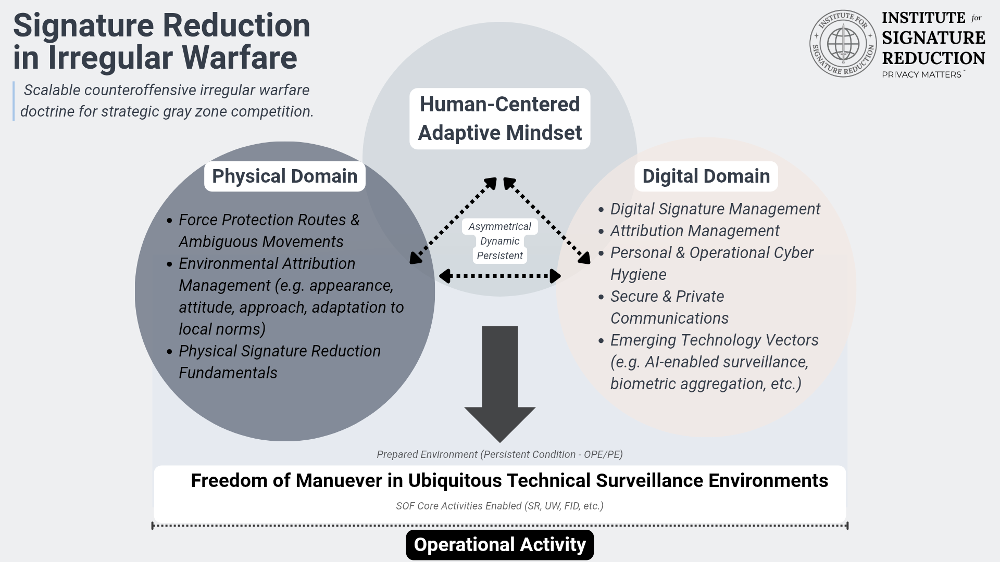

The Institute for Signature Reduction (ISR) is an independent 501(c)(3) nonprofit charitable organization dedicated to advancing education, research, and doctrine related to digital force protection, operational privacy, and signature reduction. ISR serves as a vehicle to steward practitioner-informed doctrine over time, ensuring lessons learned in complex operating environments are translated into durable institutional knowledge.
Mission and Purpose
ISR supports the development of irregular warfare and strategic competition through the lens of signature reduction, survivability, and digital force protection. The Institute bridges practitioner experience and academic rigor in service of government, defense institutions, and academia.
Areas of Focus
- Signature reduction across physical, digital, and electromagnetic domains
- Digital force protection and operational privacy
- Small team survivability in contested environments
- Irregular warfare and strategic competition
- Practitioner-informed doctrine development

Doctrine, Education, and Institutional Role
ISR develops and stewards doctrine related to signature reduction and operational survivability within evolving environments. ISR also supports educational frameworks that inform institutional adaptation.
These efforts help government and academic partners integrate practitioner-validated concepts into professional learning and long-term planning.
Publications & Commentary
Counteroffensive Irregular Warfare: A Doctrine of Signature Reduction for Strategic Competition
Small Wars Journal
Executive takeaway: Signature Reduction is a counteroffensive doctrine enabling maneuver and survivability under pervasive surveillance, integrating human, digital, and operational tradecraft considerations.
“Counteroffensive Irregular Warfare: A Doctrine of Signature Reduction for Strategic Competition” — Small Wars JournalMoede, Christopher. Institute for Signature Reduction (2025). Counteroffensive Irregular Warfare: A Doctrine of Signature Reduction. Small Wars Journal. https://smallwarsjournal.com/2025/12/22/counteroffensive-irregular-warfare/
Signature Reduction Framework
Institute for Signature Reduction
Executive takeaway: Mitigates risk by reducing observable indicators across physical, digital, and electromagnetic domains, enabling small teams and organizations to operate below thresholds of detection and attribution.
Signature Reduction is a counteroffensive doctrine of irregular warfare that deliberately manages and mitigates risk to force and mission by reducing observable indicators across the physical, digital, and electromagnetic domains. It emphasizes the intentional integration of human behavior, operational tradecraft, and technology use to preserve freedom of action within contested, surveilled, and adversary-influenced operational environments.
Rooted in special operations concepts such as Operational Preparation of the Environment (OPE), Signature Reduction treats observability, detectability, and attribution as a dynamic and adversarial condition rather than a static vulnerability. Actions taken in one domain are understood to generate effects and exposure in others, requiring continuous assessment, adaptation, and asymmetric responses to detection risk.
Unified by an adaptive, human-centered mindset, the doctrine positions individuals, small teams, and organizations to operate below thresholds of detection or attribution while shaping the environment in support of irregular warfare objectives. Signature Reduction is not concealment, operational security, or force protection alone, but an enabling framework that restores maneuver, survivability, and initiative under conditions of ubiquitous sensing.
Ubiquitous Technical Surveillance (UTS)
Institute for Signature Reduction
Executive takeaway: UTS describes a persistent, multi-layered sensing environment where routine behaviors generate detectable signatures. Signature Reduction manages exposure and shapes operational behavior to maintain freedom of maneuver.
.png)
Ubiquitous Technical Surveillance (UTS) describes the contemporary operating environment characterized by persistent, multi-layered sensing across physical, digital, and electromagnetic spaces. This environment is enabled by commercial data aggregation, networked sensors, platform convergence, and automated analysis that collectively erode traditional distinctions between civilian and military observation.
Within a UTS environment, routine behaviors generate detectable signatures that may be collected, fused, and exploited by state and non-state actors alike. Surveillance is continuous, often opaque, and increasingly asymmetric, compressing decision timelines and complicating traditional force protection and operational security measures.
UTS serves as the benchmark problem set against which Signature Reduction competes. Rather than seeking to defeat surveillance systems directly, Signature Reduction operates by managing exposure, shaping behavior, and exploiting ambiguity to preserve freedom of maneuver within an environment defined by pervasive technical observation.
Additional publications and institutional contributions are released periodically through professional journals, academic forums, and doctrinal working groups.
Affiliations
For applied training derived from ISR doctrine, see our authorized training partners: Signature Management Unit.
Contact
info@isrprivacymatters.org